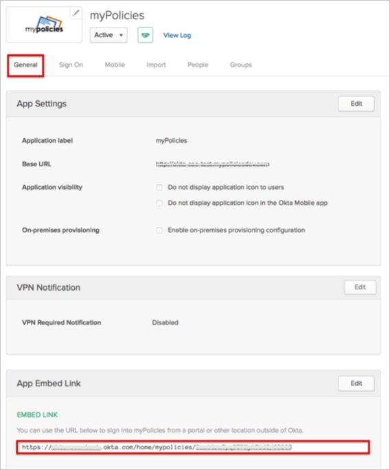

The myPolicies application is pre-configured to pass the required custom attributes from the Okta User Base Profile as part of the SAML assertion. These attributes are required to perform Just in Time (JIT) provisioning for myPolicies. In order to be able to send these attributes your Okta organization needs to have the following feature flags turned on:
Once these feature flags are turned on, make sure that the attributes are populated in the Okta User Base Profile, and also have the correct attribute mappings set with AD/LDAP (if needed). If this value is empty, Okta will pass null values to myPolicies.
The following attributes are supported:
|
|
Contact the myPolicies Support team and request that they enable SAML 2.0 for your account.
Provide the following with your email:
IDP SSO Target URL: Copy and paste the following:
Sign into the Okta Admin Dashboard to generate this variable.
IDP Issuer: Copy and paste the following:
Sign into the Okta Admin Dashboard to generate this variable.
IDP x.509 Certificate: Download, save, then attach the following:
Sign into the Okta Admin Dashboard to generate this variable.
EMBED LINK: In Otka, select the General tab for the myPolicies app, then copy and attach the value from the EMBED LINK field, as shown here:
myPolicies Support will process your request. After receiving a confirmation email, you can start assigning people to the application.
Done!
Notes:
IdP-initiated flows and Just In Time (JIT) provisioning are supported.
SP-initiated flows are not supported.
You can initiate SAML login by clicking the Sign In button in your myPolicies instance.